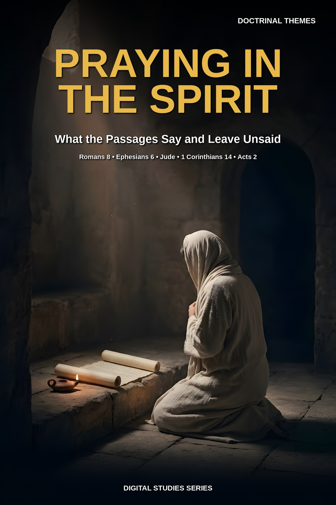
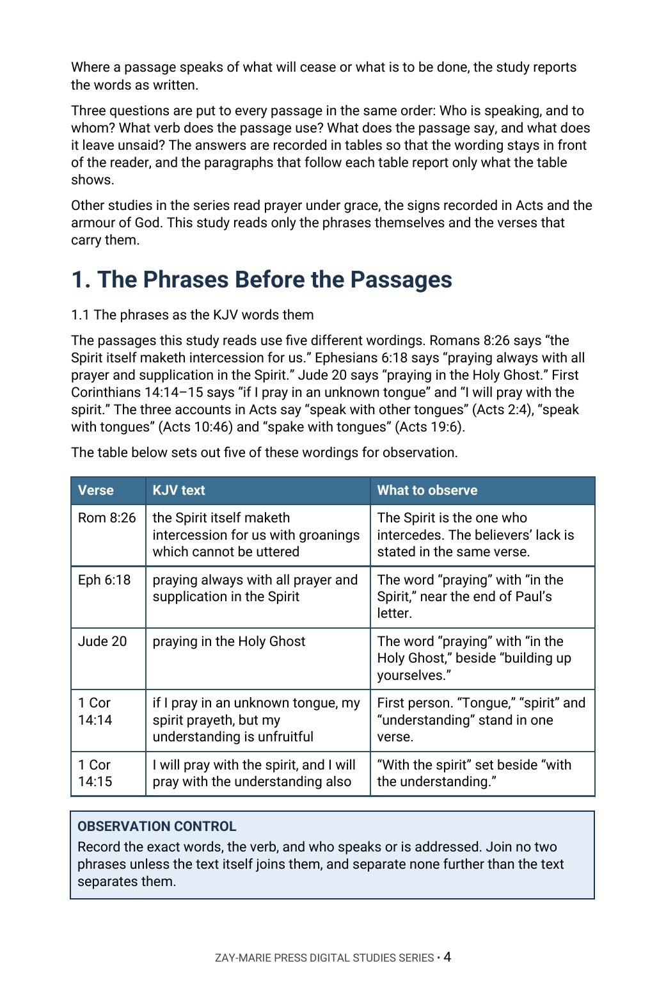

Praying in the Spirit
What the Passages Say and Leave Unsaid
What does each passage say about praying in the Spirit, praying with the spirit and speaking in tongues, and what does it leave unsaid?
Scripture uses several wordings that readers often run together: the Spirit’s intercession in Romans 8, praying “in the Spirit” in Ephesians 6 and Jude, praying “with the spirit” and “in an unknown tongue” in 1 Corinthians 14, and speaking “with tongues” in Acts.
This study reads each passage where it stands, records who is speaking and who is addressed, and reports what each says and leaves unsaid, without merging the wordings and without adding a conclusion the text does not state.
Read Each Wording Where It Stands
You will collect the exact phrases the KJV uses, read Romans 8:26–27 clause by clause, set Ephesians 6:18 and Jude 20 in their own settings, follow 1 Corinthians 12–14 in order, compare the three accounts of tongues in Acts, and set the passages side by side in one table, recording the verb, the speaker and what each leaves unsaid.
Readers who already own Study 22 (Prayer Under Grace), Study 25 (The Signs That Followed), Study 34 (Filled Again), Study 38 (Why Acts Is Not a Universal Experience Manual), Study 44 (Walking in the Spirit) or Study 76 (Strength to Stand) will recognize adjoining ground. Study 22 establishes prayer under grace; this study reads only the passages that speak of praying in or with the Spirit. Study 25 reads the signs that followed with the commission and audience in view, and Study 34 reads repeated filling in Acts; this study records what the three tongues accounts say and draws no rule of practice from them. Study 38 asks when an action narrated in Acts instructs the Body, which this study does not decide. Study 44 treats the Spirit’s ongoing ministry to the Body, and Study 76 treats the armour of God; this study reads only the verse about prayer that follows the armour. The question this study alone answers: what does each passage say about praying “in the Spirit,” “with the spirit” and “in an unknown tongue,” and where does the text itself tie them together or leave them apart?
How These Studies Relate
Study 81 reads each wording where it stands. The studies and commentary volumes below supply the neighboring ground it deliberately does not repeat.
Digital Studies
Study 22 — Prayer Under Grace Establish prayer under grace; Study 81 reads only the passages that speak of praying in or with the Spirit.
Study 25 — The Signs That Followed Read the signs with the commission and audience in view; Study 81 reports the tongues accounts in Acts as written.
Study 38 — Why Acts Is Not a Universal Experience Manual Test when an action narrated in Acts instructs the Body; Study 81 draws no rule of practice from the Acts accounts.
Commentary Series
Acts Commentary Series, Volume 2 — The Spirit in Acts Argues a position on the four scenes in which Acts reports the Spirit’s coming; Study 81 reports the Acts accounts beside Paul’s wordings and states no conclusion.
Acts Commentary Series, Volume 4 — Cornelius and the Council Argues how the household of Cornelius and the council at Jerusalem fit together; Study 81 records only what Acts 10:46 says about speech.
Follow Each Wording Through Its Own Verses
The Phrases
Collect the exact wordings the KJV uses and record the verb and the speaker attached to each.
Romans 8:26–27
Read the passage clause by clause, noting who is weak, who helps and what is said of the groanings.
Ephesians 6:18 and Jude 20
Read each verse in its own setting, noting what it says to do and what it leaves unsaid.
1 Corinthians 12–14
Follow the three chapters in order, tracing “tongue,” “spirit,” “understanding” and “interpret.”
Tongues in Acts
Compare Acts 2:4, 10:46 and 19:6, recording who was present and what each account says about speech.
Side by Side
Set the passages in one table and practice reporting what is stated, what is not, and where the text stops.
Read the Word in Its Context
Romans 8:26–27
The Spirit’s help and intercession, with groanings described as unuttered.
Ephesians 6:18
A closing charge to pray always, in the Spirit, for all saints.
Jude 20
A turn to believers: building up and praying in the Holy Ghost.
1 Corinthians 14:2
A verse on speaking unto God rather than unto men.
1 Corinthians 14:14–15
Praying with the spirit and with the understanding, set side by side.
Acts 2:4
Filling and speech, with the source of the utterance named.
Acts 10:46
Speaking with tongues and magnifying God in the household of Cornelius.
Acts 19:6
Disciples at Ephesus, the Holy Ghost, tongues and prophesying.
A Rule for Reading This Subject
Record the exact words, the verb, and who speaks or is addressed. Join no two phrases unless the text itself joins them, and separate none further than the text separates them.
Report each wording where it stands, and stop where the text stops.
Preview the Study Before You Purchase
Click any page to enlarge it for reading.



The Phrases Before the Passages
See how the study begins by setting each wording in one table for observation.
A Focused Study of Prayer, the Spirit and Tongues in Their Own Settings
16-Page Digital PDF
Approved cover and 15-page numbered interior.
7 Teaching Sections
A text-driven study from the phrases to the passages set side by side.
Callout Boxes
Five callout boxes marking the study’s key working rules.
KJV Tables
Tables setting out the key passages for observation.
Scripture-Tracing Exercise
Guided traces through the passages the study relies on.
Guided Further Study
Passage groups for deeper reading.
Review Questions
Questions testing the study’s markers and method.
Final Synthesis Exercise
A written synthesis drawing the whole study together.
Praying in the Spirit
16-page digital PDF · For personal use